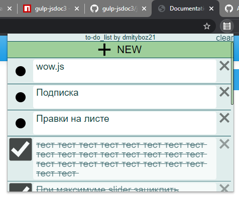
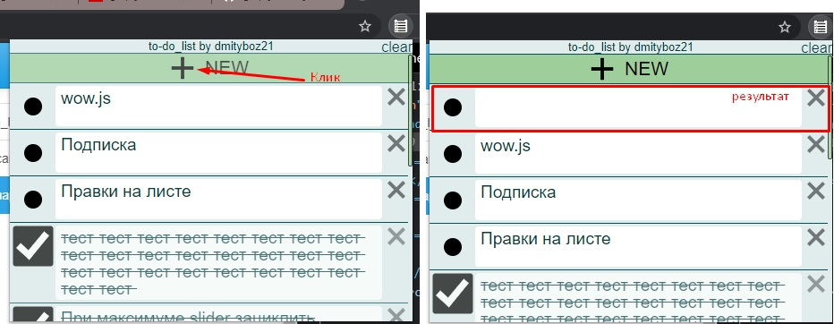
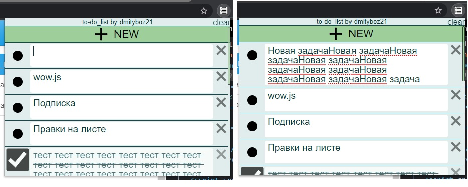
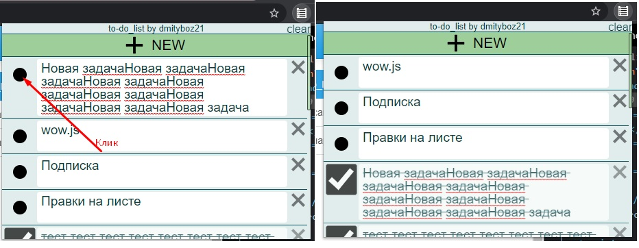
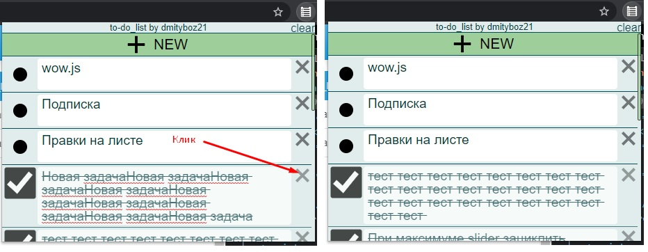
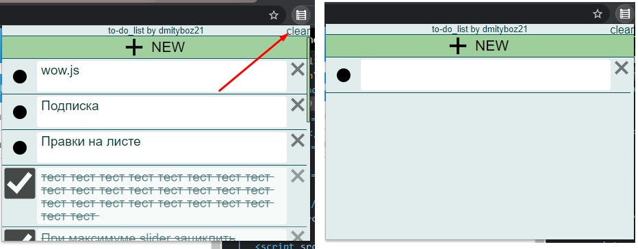
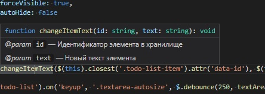

to-do_list
Разработчик: Дмитрий Боженко, пи-17зб
Проект: Список дел(to-do list), расширение для google chrome
Описание проекта
To-do list - вариант ведения списка дел, требуемых к выполнению, заметок, прочего. Имеет минималистичный дизайн и довольно удобное управление.
Скриншот работающего расширения

Сценарии использования:
- Добавление новой записи

- Изменение текста задачи

- Изменение статуса выполнения задачи

- Удаление задачи

- Очистка списка

Проверка корректности docbook:
Vs code успешно отобразил подсказку по функции
